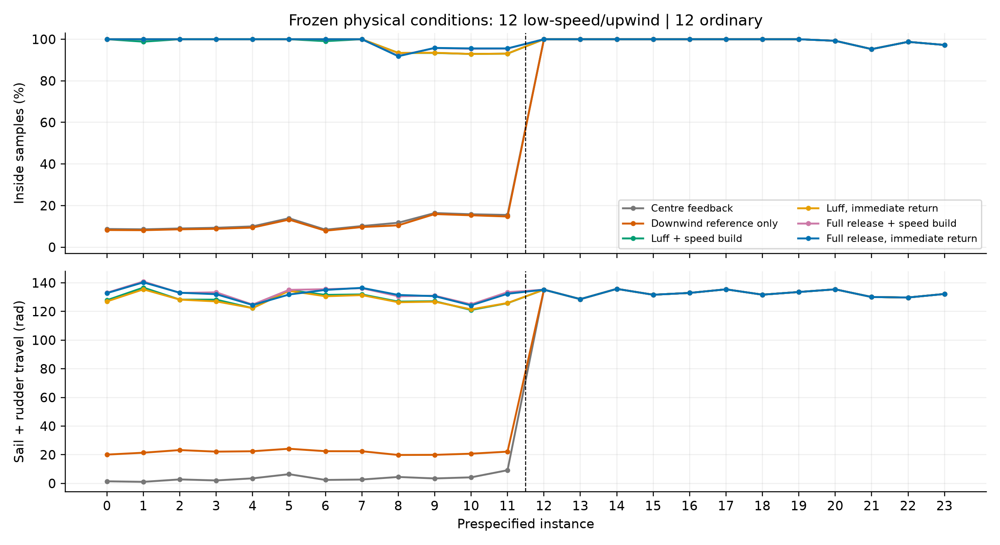
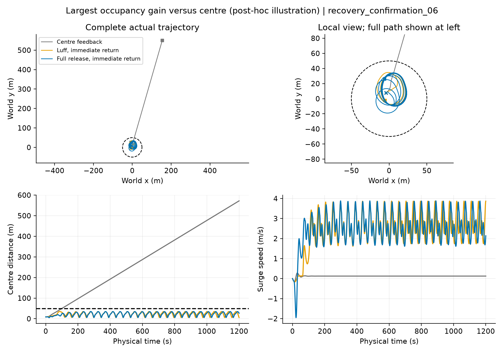
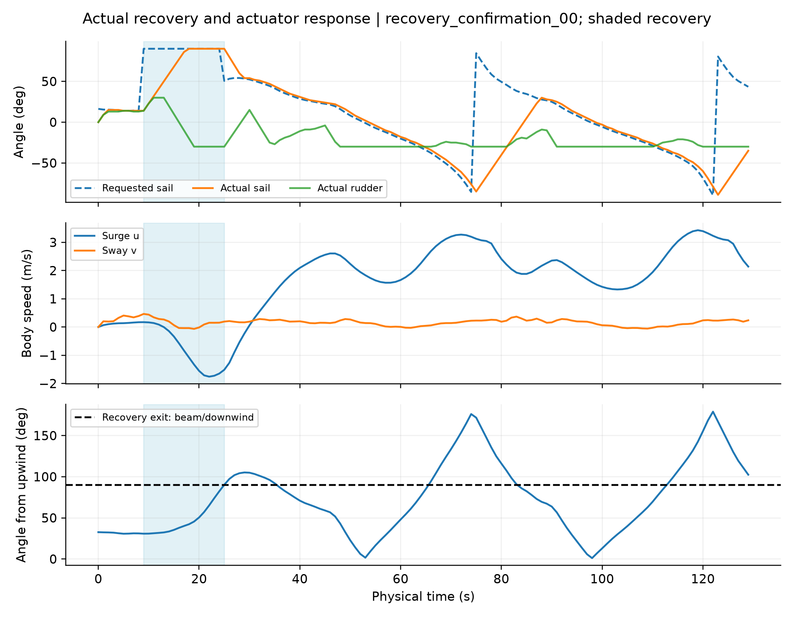
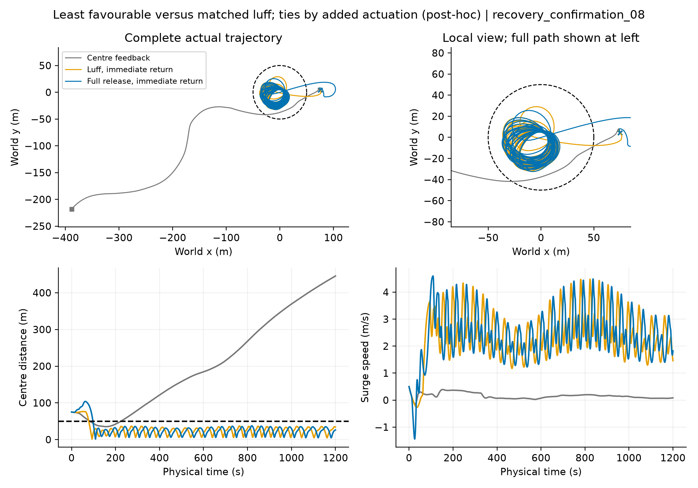
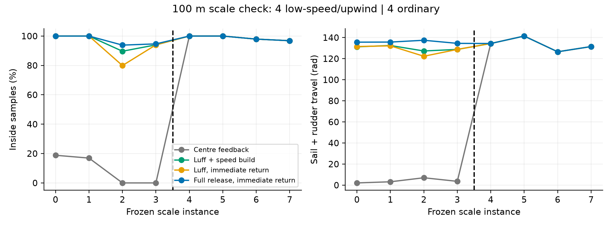

Actual simulation traces; all tasks retained. Risk and ordinary families are predefined. Illustration selection is disclosed in the report.
Release vs matched luff: 3 wins, 8 ties, 1 loss; mean +0.4931 percentage points and +3.9823 rad actuator variation. All eight inside-start tasks tie. Four entry differences: -19, +28, +32, +30 seconds inside.


Recovery exits at t=25 s while surge velocity is still negative. Exit means reaching the beam/downwind heading half-plane, not restored forward speed. The signed 90-degree command is an ideal angle-positioning interface, not validated passive sheet release.

Release spends 19 seconds less inside than matched luff. Initial entry time is included in the longest-outside metric.

